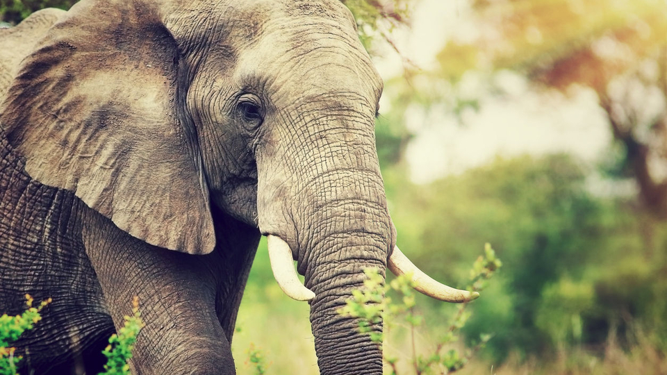

Olifanten

Alleen olifanten hebben een echte slurf. Het is een heel bijzonder lichaamsdeel. Een slurf bestaat uit tienduizenden spiertjes, waardoor hij erg makkelijk te bewegen is en erg krachtig is. Een olifant kan er een boomstam mee optillen, maar ook een muntstuk. Wat is nu eigenlijk een slurf? Eigenlijk is een slurf in de loop van de jaren ontwikkeld uit de neus en de bovenlip van de dieren. Waarvoor wordt de slurf eigenlijk gebruikt? De slurf is ten eerste een grijparm om zware,lichte kleine en grote dingen op te tillen. Olifanten grijpen voedsel beet met hun slurf en stoppen het dan in hun mond. Als ze willen drinken zuigen ze met hun slurf water op en spuiten dat in hun mond. Ten tweede is de slurf een soort douche. De olifant moet zijn huid geregeld met water en daarna met stof of zand besproeien. Ten derde is het een middel om andere dieren mee te slaan of te aaien. Afrikaanse babyolifant trompettert(Zuid-Afrika) Ten vierde wordt de slurf gebruikt om geluiden te maken, maar het meeste kunnen wij niet horen. Ten vijfde is de slurf ook gewoon een neus en ze kunnen daarmee heel goed ruiken.